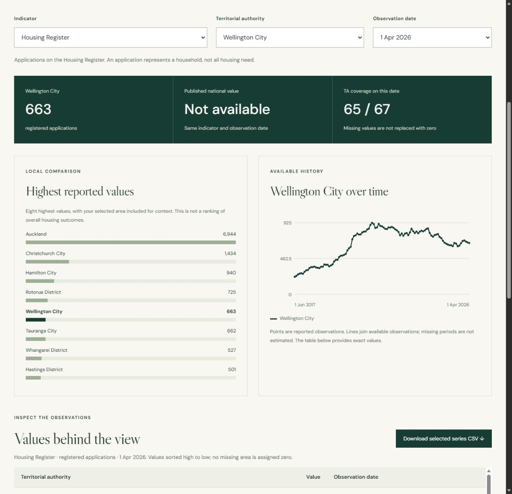

Groundwater plume forecasting
Forecasting future contaminant plumes from observed histories with temporal attentive neural processes. Includes seed-aligned comparisons and CPU reproducibility checks.
ACML 2026 Journal Track · Conditionally accepted
Data science & applied machine learning
I’m Loc, a data science researcher in Wellington. I turn complex data into clear analysis, reproducible models, and reports that teams can use. My work spans environmental simulation, computer vision, and biomedical research.
PhD candidate, Victoria University of Wellington.
Thesis submitted .
Open to data science, applied ML, analytics, research software, and academic opportunities.
Wellington, New ZealandFeatured / Public-data analytics
A working analyst project built from official HUD data: Python preparation, SQLite queries, quality checks, interactive charts, and CSV downloads.
Five indicators · 67 territorial authorities · Preserved April 2026 source
Independent portfolio project. The browser dashboard is complete; the separate Power BI build kit is available for further development.

01 / Selected work
Forecasting future contaminant plumes from observed histories with temporal attentive neural processes. Includes seed-aligned comparisons and CPU reproducibility checks.
ACML 2026 Journal Track · Conditionally accepted
Auditing generator-induced dependence in simulation benchmarks, testing on fresh-seed geology, and examining trade-offs between plume similarity and well decisions.
Engineering Applications of Artificial Intelligence · Under review
Layered evaluation of uncertainty, conformal coverage, and shift detection for groundwater surrogates. Public scalar summaries make the finite-design results inspectable.
Environmental Modelling & Software · Under review
An end-to-end computer vision pipeline for detecting and screening spinal deformities in salmon X-ray images, connecting image analysis with aquaculture research.
Related publications · IVCNZ 2024 & 2025
The groundwater repositories contain code and permitted results with documented reproduction limits. Simulation fields and trained checkpoints are not distributed. Each repository explains its evidence, data-access requirements, and scientific scope.
02 / Research & publications
My doctoral work studies data dependence, temporal generalization, and reliability in neural models of groundwater contaminant transport. The findings are bounded by the simulated study design.
Submitted doctoral thesisNeural Surrogate Models for Groundwater Contaminant Transport: Data Dependence, Temporal Generalization, and Reliability
Full publication record on Google Scholar16 peer-reviewed papers, including three ICONIP 2026 acceptances, plus one conditionally accepted journal-track paper.
Loc K. Nguyen and Binh P. Nguyen
Formal journal acceptance remains conditional on conference presentation and final-manuscript requirements.
Research codeLoc K. Nguyen, Allanah Kenny, Theo S. Sarris, and Binh P. Nguyen
Loc K. Nguyen, Allanah Kenny, Theo S. Sarris, and Binh P. Nguyen
Loc K. Nguyen, Allanah Kenny, Theo S. Sarris, and Binh P. Nguyen
Earlier work spans molecular property prediction, drug discovery, bioinformatics, and computer vision. The full record and publication links are on Google Scholar.
Selected earlier journal publications
Drug discovery, molecular prediction, and research data resources. Full record on Google Scholar ↗
Tuan Vinh, Loc K. Nguyen, Quang H. Trinh, and Thanh-Hoang Nguyen-Vo
Molecular toxicity prediction with attention-based graph neural networks.
Loc K. Nguyen, Thanh-Hoang Nguyen Vo, Quang H. Trinh, et al.
Ensemble learning and evolutionary optimization for natural-product screening.
Thanh-Hoang Nguyen-Vo, Loc K. Nguyen, Nguyet Do, et al.
CNN-based prediction using learned molecular fingerprint representations.
Thanh-Hoang Nguyen-Vo, Loc K. Nguyen, Nguyet Do, et al.
A review and comparison of herbal-metabolite databases for research.
03 / Experience & practice
Data quality, model evaluation,
clear reporting, and teaching.
2022–present
Victoria University of Wellington
Scientific ML for groundwater transport, with reproducible evaluation and statistical analysis. Thesis submitted October 2026; degree not yet conferred.
2024–2026
Victoria University of Wellington
Research data collection, quality assurance, analysis, technical reporting, and publication support for AI-assisted antibiotic discovery.
2023–2026
Victoria University of Wellington
Tutorials and student support across programming, data management, statistical modeling, and machine learning.
Earlier & concurrent
Research contracts with Whitireia and WelTec, live sports data collection with IMG ARENA, computer vision at Smart Vision, and computational biology research at IU, VNU HCMC.
04 / Contact
I’m open to industry and academic roles in data analysis, applied ML, research software, and teaching. Get in touch to discuss a role or collaboration.